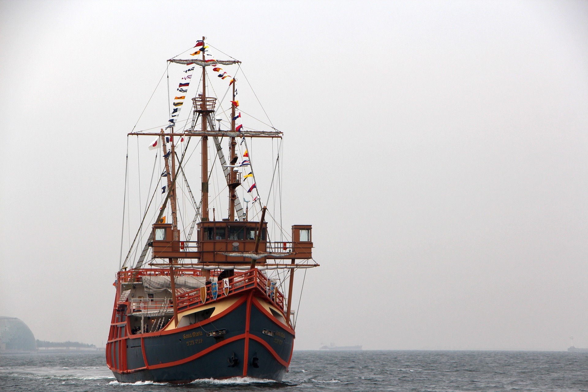

天下一の黄金の和船「大阪城御座船」
大阪城のお濠めぐりができる黄金色の御座船が登場！季節ごとに移りゆく景色の中、大阪城の石垣を間近に眺めることができる！

営業時間
10：00～16：50（最終便発）
10：00～16：30（最終便発）※11月～2月
休日
年末年始・荒天時は運休
大坂の陣４００年天下一祭の記念事業として期間限定で運行していた大阪城のお濠めぐりができる黄金色の御座船が毎日運行に！金箔貼りの御座船(和船)で、大阪城内濠を遊覧するお濠めぐりを期間限定で実施します。季節ごとに移りゆく景色の中、大阪城の石垣を間近に眺めることができる貴重な機会です。御座船では、お濠巡り衆が大阪城の歴史等を解説してくれます！ 〔使用船舶について〕豊臣期の大坂城と城下町を描いた貴重な屏風絵「豊臣期大坂図屏風」（オーストリア エッゲンベルク城所蔵）の中に見られる秀吉の「鳳凰丸」をモデルに、大坂の陣から４００年を経た平和な大阪で、秀吉が生きていたら、黄金の御座船にするだろうという意を込めて、船全体に純金箔貼りを多用したものです。
◆コース： 大阪城極楽橋付近から内濠を周回するコース（所要時間: 約２０分）
◆営業時間：10：00～16：50（最終便発）※11月～2月は10：00～16：３0（最終便発） ※約10分間隔で運行（定員16名）
◆現地連絡先携帯電話： 080-3764-3773
◆コース： 大阪城極楽橋付近から内濠を周回するコース（所要時間: 約２０分）
◆営業時間：10：00～16：50（最終便発）※11月～2月は10：00～16：３0（最終便発） ※約10分間隔で運行（定員16名）
◆現地連絡先携帯電話： 080-3764-3773
住所
大阪市中央区大阪城1-1
アクセス
天満橋駅（Osaka Metro谷町線）（京阪）から徒歩15分
大阪城公園駅（ＪＲ環状線）から徒歩10分
大阪ビジネスパーク駅（Osaka Metro 長堀鶴見緑地線）から徒歩10分
谷町4丁目駅（Osaka Metro 谷町線、中央線）から徒歩20分
森之宮駅（ＪＲ環状線）(Osaka Metro 中央線）から徒歩15分
電話番号
06-6314-3773